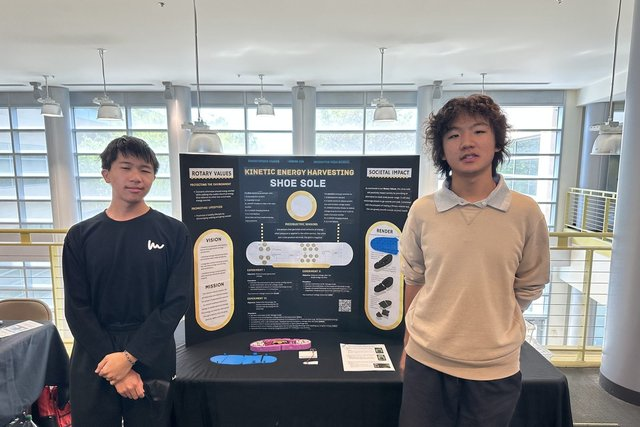

Work
Engineering projects, competition entries, and the prosthetics chapter I run.

Big Hands e-NABLE Fremont
Founder & President · Dec 2025 – present
I founded a chapter of the global e-NABLE network that designs and 3D prints free prostheses for the limb-different community.

Kinetic Energy Harvesting Shoe Sole
Rotary Young Innovators 3D Printing Challenge finalist · 2025
A 3D-printed shoe sole with embedded piezoelectric discs that harvests the energy of walking into a rechargeable battery.

Load-Bearing Upper Body Exoskeleton
Central California Invention Convention & Rotary 3D Printing Challenge finalist · 2026
A passive upper-body exoskeleton that supports safe manual handling and improves ergonomic performance in high-strain environments.
Maker³ 1U CubeSat — Structures Team
Fremont Student Makers · Sept 2024 – present
Structural design and machining protocols for a 1U CubeSat projected to launch in 2027.
SoliC — Solar Panel Self-Cleaning System
Conrad Challenge Innovator · 2024–2025
A passive solar-panel cleaning system combining a dew collector with super-hydrophobic and super-hydrophilic panel coatings.
Arasaka Mantis Blades
FUSD Engineering Expo · 2025
A 3D-printed articulated prop build, presented at the 2025 FUSD Engineering Expo.

Rotary Young Innovators — Competition Gallery
Two-time finalist · 2025, 2026
Photos from the Rotary Young Innovators 3D Printing Challenge, where the shoe sole (2025) was a finalist.